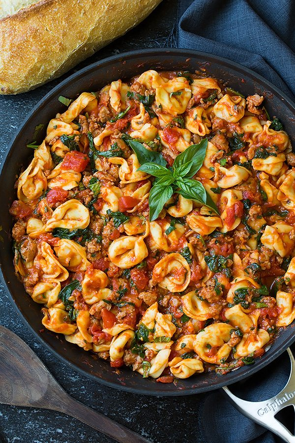

One Pan Turkey Sausage and Marinara Tortellini

Super easy one pan dinner that makes great leftovers for the week!
Easy one pan dinner full of flavorful cheesy tortellini, hearty sausage, rich tomato flavor, and fresh herbs.
Ingredients
- 1 Tbsp olive oil
- 2 cloves garlic, minced
- 1 lb hot or sweet turkey sausages, casings removed
- 1 (24 oz) jar jar marinara sauce
- 1 (14.5 oz) can diced tomatoes
- 3/4 cup low-sodium chicken broth
- 1/2 cup water
- 1 (20 oz) pkgs. refrigerated three cheese tortellini
- 4 cups packed fresh spinach, roughly chopped
- 3 Tbsp chopped fresh parsley
- Freshly ground black pepper
- 3 Tbsp chopped fresh basil
Steps
- Heat olive oil in an extra-large skillet or a pot over medium-high heat.
- Add garlic and saute 30 seconds then add sausage break it up a bit and cook, stirring and breaking up sausage occasionally, until sausage has cooked through.
- Add in marinara sauce, tomatoes, chicken broth and water and bring to a light boil.
- Add in tortellini, toss and press tortellini down into sauce, reduce heat to medium-low, then cover and simmer until tortellini is cooked through, about 10 minutes, stirring once halfway through.
- Stir in spinach and parsley, season with pepper to taste (season with salt only if needed, if you used the brand I mentioned you likely won't need it) and toss gently to allow spinach to cook through and wilt.
- Stir in basil and serve warm.